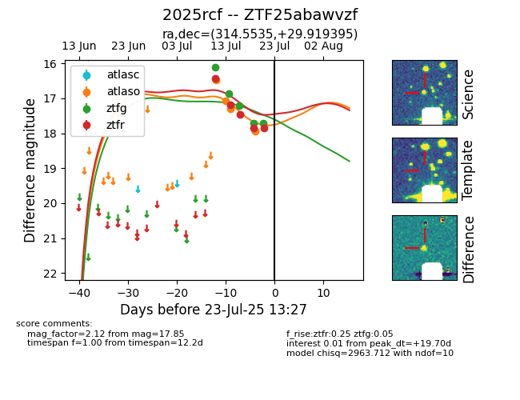

Target ZTF25abawvzf at 2025-07-23 13:27, see:
FINK: fink-portal.org/ZTF25abawvzf
Lasair: lasair-ztf.lsst.ac.uk/objects/ZTF25abawvzf
ALeRCE: alerce.online/object/ZTF25abawvzf
TNS: wis-tns.org/object/2025rcf
YSE: ziggy.ucolick.org/yse/transient_detail/2025rcf
alt names
ZTF25abawvzf (ztf,fink)
2025rcf (tns,yse)
coordinates:
equatorial (ra, dec) = (314.5535,+29.91940)
galactic (l, b) = (74.3923,-10.24356)
photometry
last atlaso=17.94, ztfg=17.72, ztfr=17.85
5 atlaso, 5 ztfg, 5 ztfr detections
